Proyecto de Responsabilidad Social Empresarial
Contribuyendo al desarrollo sostenible de la comunidad.
Contribuyendo al desarrollo sostenible de la comunidad.
Ternova es una empresa de El Salvador que se destaca por su fuerte compromiso con la sostenibilidad y la innovación en diversas áreas. Su enfoque principal es promover la economía circular, lo que significa que trabaja para reducir la cantidad de residuos y reutilizar los materiales tanto como sea posible. Un ejemplo claro de esto es su trabajo en el reciclaje de empaques flexibles, donde busca utilizar materiales reciclados en lugar de plásticos nuevos, lo que ayuda a disminuir la contaminación y el uso de recursos naturales.
Actualmente, Ternova no solo lidera en la industria del empaque, sino que también ha diversificado sus actividades hacia áreas como la logística y el desarrollo de nuevas tecnologías. La empresa ha invertido en el desarrollo de soluciones innovadoras y ha establecido un laboratorio de innovación (INnovaLab) para fomentar la creación de nuevos negocios
Con operaciones en más de 40 países y presencia en mercados como Centroamérica, Asia y Estados Unidos, Ternova tiene una visión global, pero mantiene sus raíces en El Salvador. Además, la compañía emplea a miles de personas y está comprometida con la creación de una industria que sea motivo de orgullo para el país
 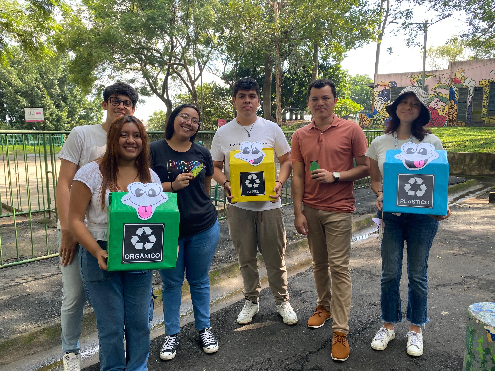
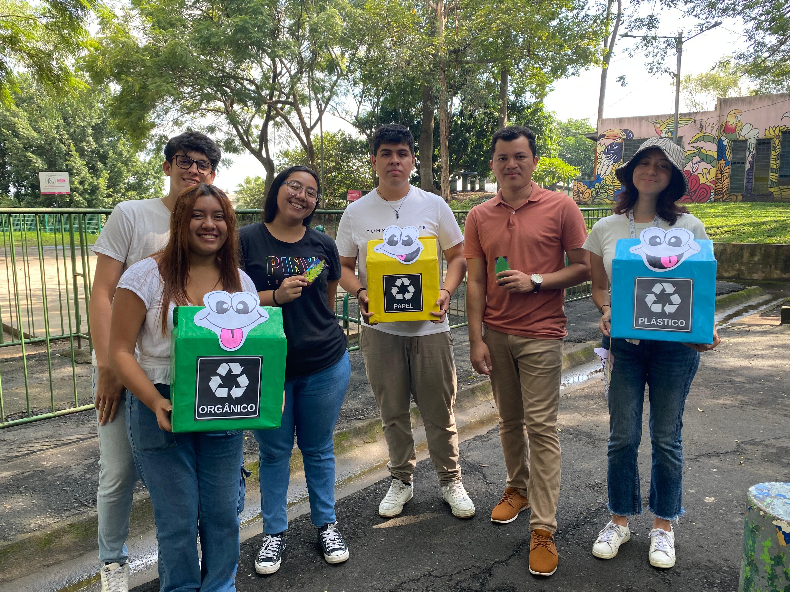

.jpeg) 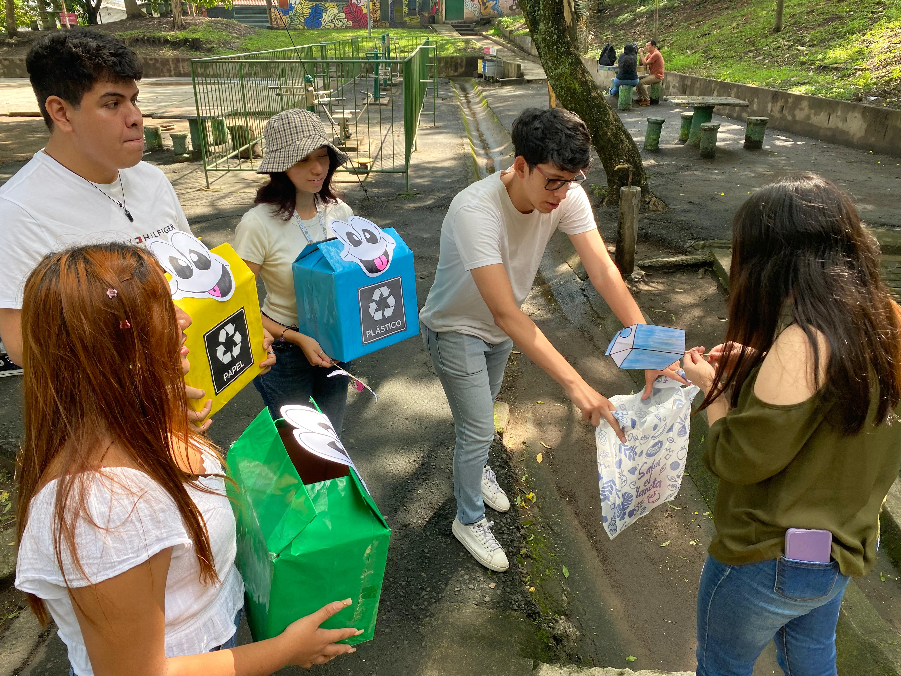
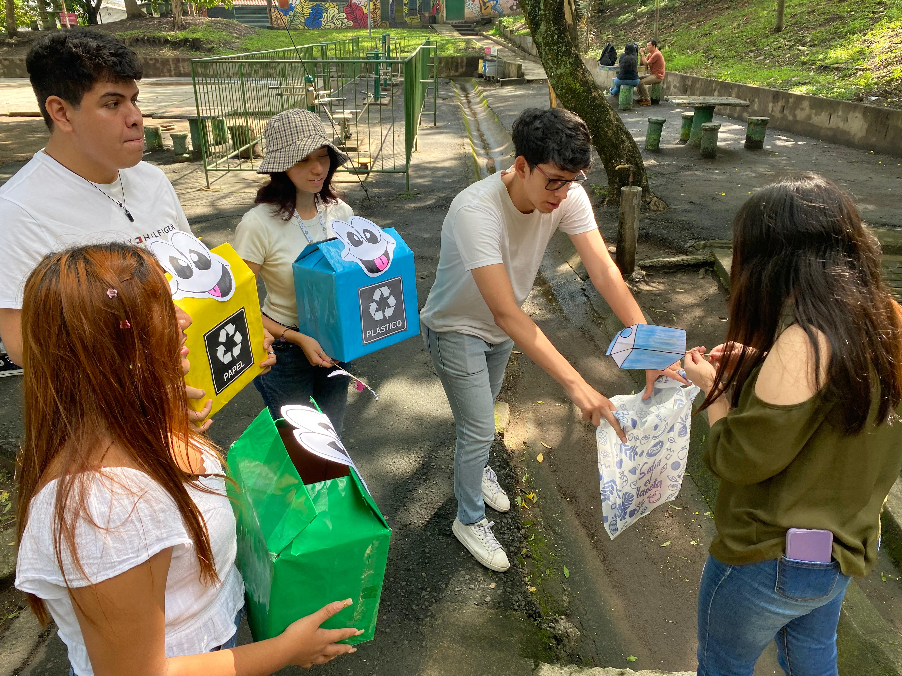
¿Sabías que todos podemos ser parte del cambio hacia un futuro más sostenible? Este proyecto de reciclaje no solo tiene un enfoque educativo, sino también estratégico. Trabajamos mano a mano con empresas privadas, instituciones públicas y centros educativos como colegios y universidades, para llegar a cada rincón de nuestra sociedad.


Nuestra línea operativa es sencilla pero poderosa: primero realizamos un diagnóstico para entender las necesidades y oportunidades en cada área. Luego, entregamos los recursos necesarios y ponemos en marcha las acciones, siempre evaluando lo aprendido en el camino para mejorar continuamente.
Y aquí viene lo emocionante: si quieres unirte como voluntario, ¡prepárate para aprender! Ofrecemos capacitaciones que combinan una parte educativa y otra formativa, diseñadas para empoderarte y darte las herramientas para ser un agente de cambio. Porque en este proyecto, cada esfuerzo cuenta, y tú puedes ser parte de esta transformación. 🌍♻️
Como grupo de estudiantes de la Universidad Centroamericana José Simeón Cañas (UCA), nos sentimos sumamente felices de haber participado en este proyecto. La experiencia nos permitió conectar con las personas y, al mismo tiempo, generar conciencia sobre la importancia de separar correctamente los desechos orgánicos. Fue una actividad enriquecedora para todos, ya que buscamos una forma de desarrollar la actividad de manera creativa e interactiva. A través de una dinámica participativa, invitamos a las personas a clasificar dibujos de distintos tipos de residuos y colocarlos en el contenedor correspondiente, fomentando así el aprendizaje de una forma lúdica y entretenida.
Durante las capacitaciones brindadas por Ternova, experimentamos una excelente relación y comunicación, lo que hizo que la actividad fuera motivadora. El ambiente fue sumamente agradable y acogedor, propiciando el aprendizaje de manera colaborativa y dinámica. Estas experiencias no solo nos inspiraron, sino que también fortalecieron nuestro compromiso con el cuidado del medio ambiente. Saber que, a través de estas acciones, contribuimos a construir un país más limpio nos llena de orgullo y nos motiva a seguir promoviendo cambios positivos en nuestra comunidad.
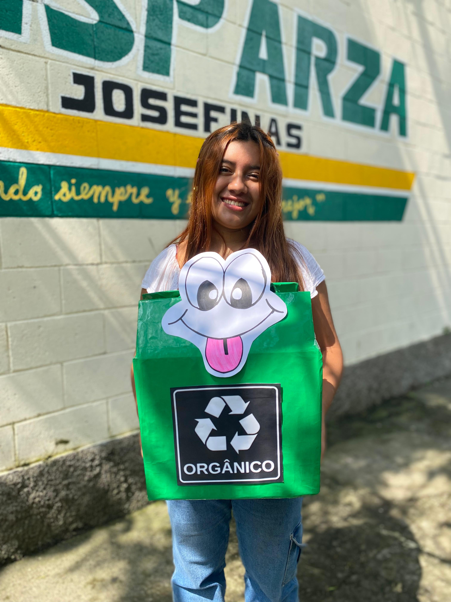 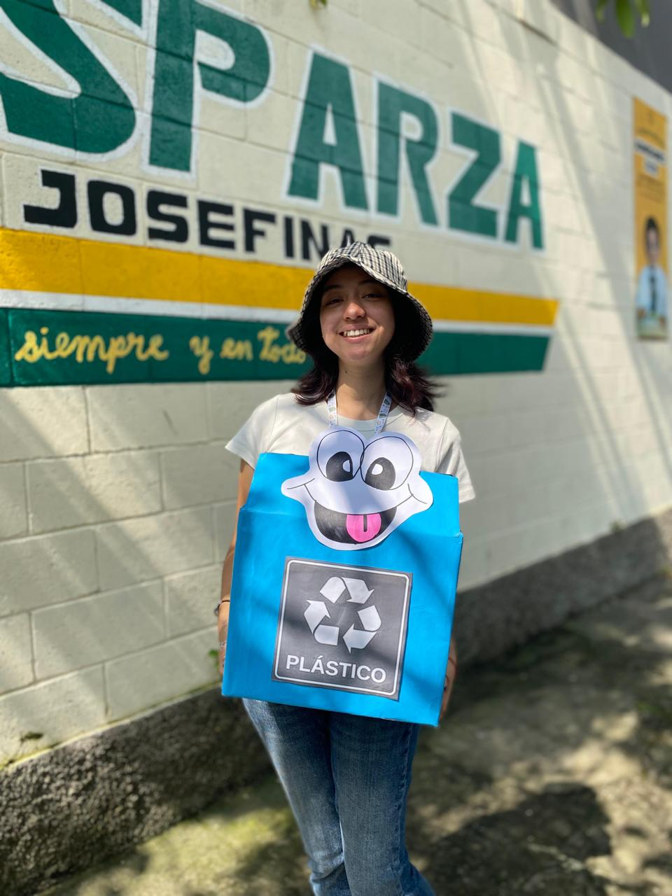 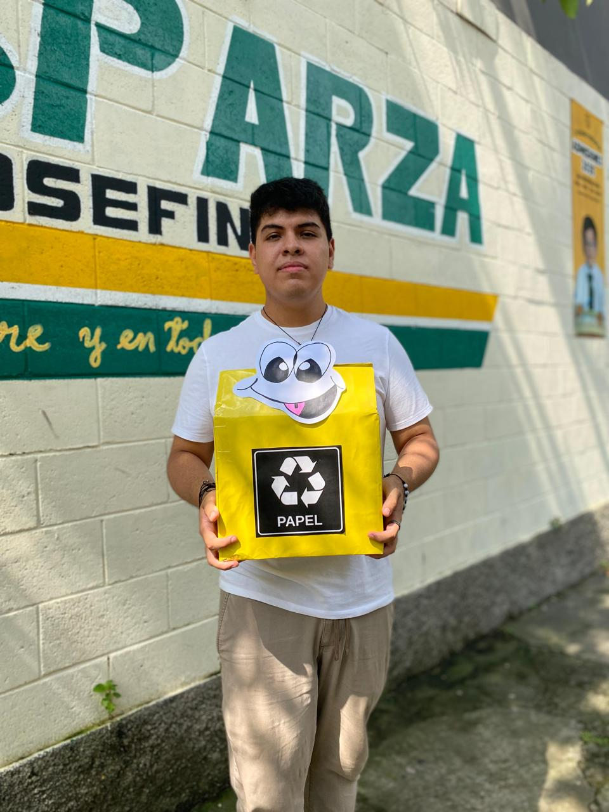 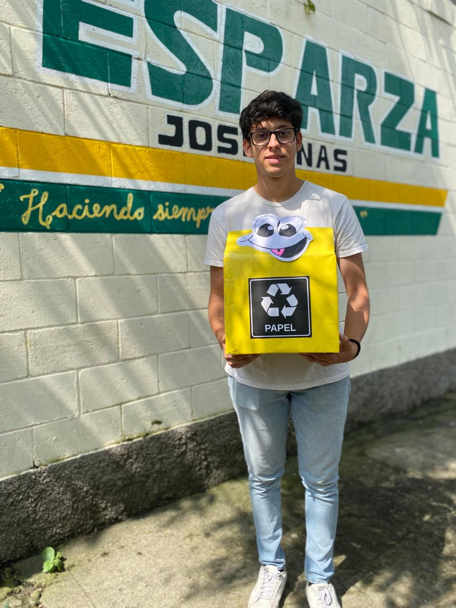 .La memoria histórica es un pilar fundamental en el movimiento Reciclaje 503, que busca no solo mantener limpias las zonas emblemáticas del país, sino también preservar la riqueza cultural y natural que define la identidad salvadoreña. Este proyecto tiene como objetivo proteger espacios icónicos como el centro histórico, parques nacionales y playas, asegurando que tanto los habitantes como los visitantes puedan disfrutar de un entorno limpio y saludable. Al cuidar estos lugares, se evita su deterioro y desaparición, manteniendo viva la conexión con la historia y tradiciones del país. De esta manera, Reciclaje 503 no solo fomenta prácticas sostenibles, sino que también trabaja para salvaguardar los valores culturales y ambientales que forman parte del legado salvadoreño, inspirando a futuras generaciones a valorar y respetar su entorno. .
Nuestro proyecto tiene como objetivo fortalecer los vínculos con las comunidades y personas, promoviendo una conexión más profunda con el medio ambiente y la sostenibilidad. A través de este programa, buscamos no solo fomentar prácticas responsables, sino también brindar beneficios directos, como la mejora de las condiciones de limpieza y bienestar en los entornos de las personas. Creemos que al involucrar activamente a las personas e informar, crearemos un mayor compromiso compartido hacia la protección del planeta y un futuro más sostenible para todos.


 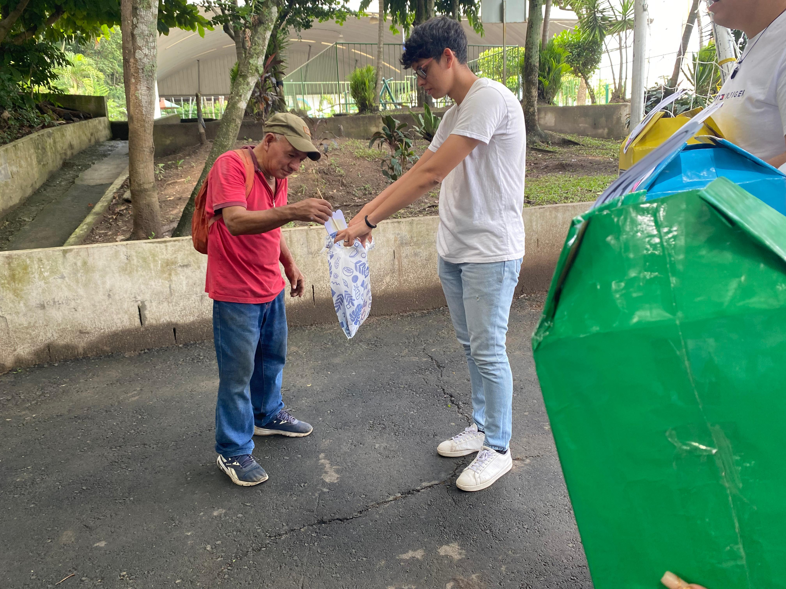
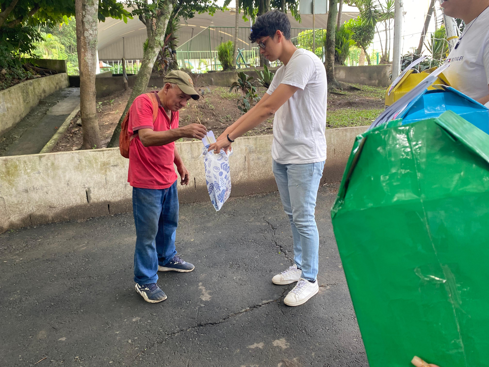
 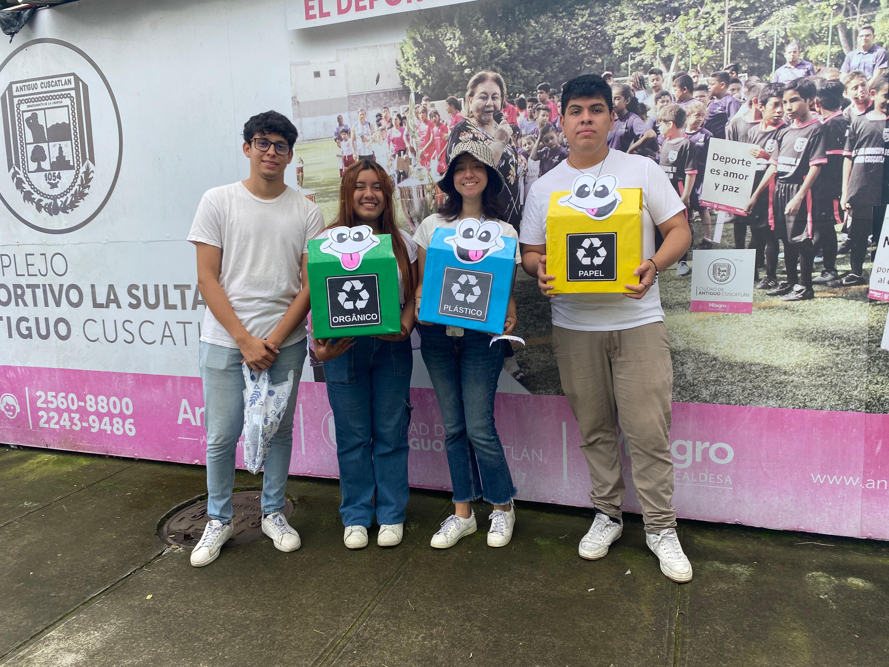
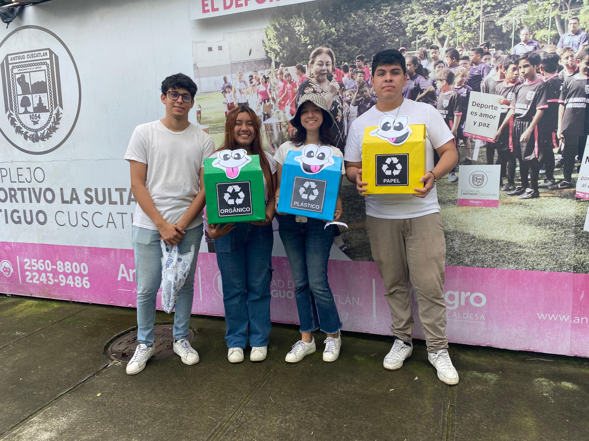